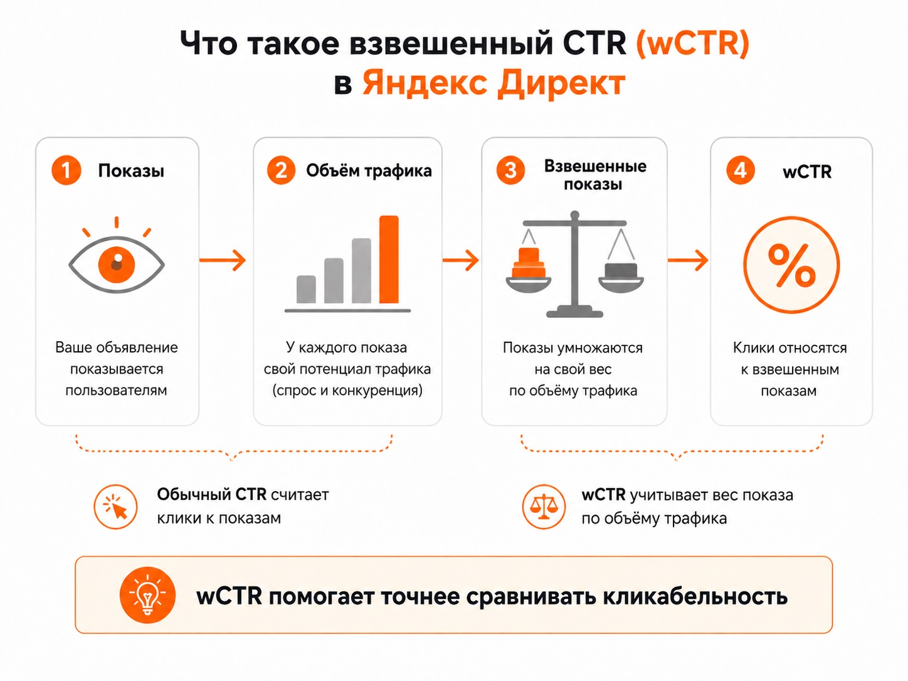
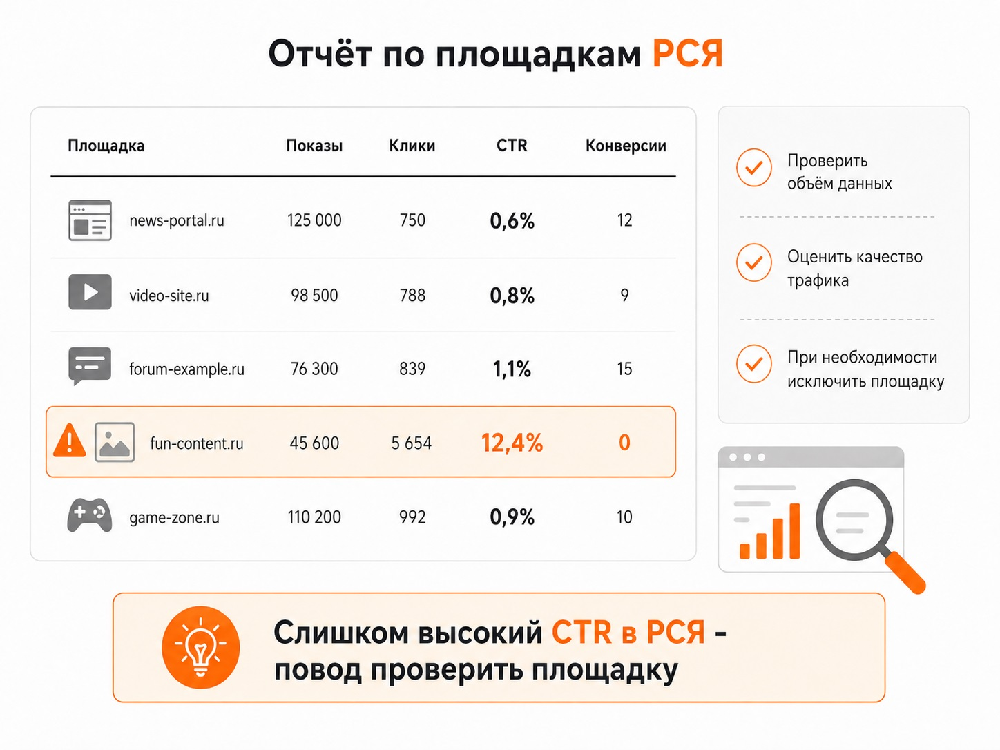

Блог о платном трафике
Какой CTR считается хорошим в Яндекс Директ
Универсального хорошего CTR в Яндекс Директе не существует. На поиске показатель зависит от ниши, запросов, конкуренции, ставки и объема трафика. В РСЯ цифры другие, а слишком высокий CTR иногда говорит о проблеме с качеством трафика.
Для очень грубого ориентира Яндекс приводит такие значения: на поиске хорошим считается CTR от 8%, для РСЯ - от 0,5 до 2%. Единой нормы нет: оценивать рекламу нужно вместе с конверсиями.
| Размещение | Примерный ориентир | Как оценивать |
|---|---|---|
| Поиск | от 8% | Сравнивать с похожими кампаниями и объемом трафика |
| РСЯ | 0,5-2% | Оценивать вместе с конверсиями |
| РСЯ выше 2% | Требует проверки | Возможны случайные клики или некачественные площадки |
Эти цифры не норматив, которого обязательно нужно добиться.
Что такое CTR
CTR, или Click-Through Rate, показывает, какая доля показов объявления закончилась кликом.
CTR = клики / показы × 100%
Например, объявление получило 1 000 показов и 70 кликов: 70 / 1 000 × 100% = 7% CTR. В Директе показатель рассчитывается автоматически, но сам по себе мало говорит о качестве рекламы.
Почему обычный CTR не совсем объективен
Сравнивать два объявления только по CTR неправильно: они могли показываться в разных условиях. На поиске объявления получают разный объем трафика. Яндекс учитывает ставку, прогноз CTR и коэффициент качества при отборе, а заметные позиции обычно получают больше потенциальных кликов.

Поэтому вывод «у конкурента CTR 15%, а у меня 7%, значит моя реклама настроена хуже» сам по себе ничего не доказывает.
Что такое взвешенный CTR, или wCTR
В Яндекс Директе есть отдельный показатель - взвешенный CTR, или wCTR. Он корректирует обычную кликабельность с учетом объема трафика тех мест, на которых показывалось объявление. Чем выше потенциальный объем трафика места показа, тем больший вес получает такой показ.

Ставка напрямую в формулу wCTR не входит, но влияет на доступный объем трафика. Поэтому одна фиксированная цифра, например «CTR обязательно должен быть 10%», не подходит для оценки кампаний.
Какой CTR хороший на поиске Яндекса
Яндекс приводит ориентиры: ниже 4% - низкое значение, 4-7% - нормальное, от 8% - хорошее. Использовать шкалу можно только как отправную точку.
Внутри одного аккаунта CTR различается: брендовый запрос часто получает высокий показатель, а общий конкурентный запрос - значительно ниже. На результат влияют запрос, ниша, конкуренция, предложение, соответствие объявления запросу, объем трафика, формат, устройство и брендовый характер запроса.
Хороший CTR на поиске - это показатель, который соответствует вашей семантике и условиям показа, но главное - приводит целевой трафик. Подробнее о механике показов - в статье «Как работает Яндекс Директ».
Низкий CTR на поиске не всегда означает плохое объявление
CTR 5% может быть ниже ориентира 8%, но в конкурентной тематике кампания при этом способна давать обращения по приемлемой цене и окупаться. Попытка поднять CTR повышением ставки может сделать трафик дороже и ухудшить цену заявки.
Для performance-кампаний важнее показатели реальных целевых действий и заказов, а не CTR или цена клика сами по себе.
Какой CTR хороший в РСЯ
В РСЯ человек не ищет товар или услугу в момент показа, поэтому кликабельность здесь значительно ниже. Официальный ориентир Яндекса - 0,5-2%. Значения выше 2% Яндекс рекомендует анализировать на предмет случайных кликов.
Показатель около 0,5-1% может быть совершенно нормальным, если реклама дает нужные конверсии. Задача РСЯ - получить нужных пользователей по приемлемой стоимости, а не максимальное количество кликов.
Почему слишком высокий CTR в РСЯ может быть плохим сигналом
Смотреть нужно не только на средний CTR кампании, но и на отдельные площадки. Если средний CTR 0,7%, а конкретный сайт или приложение показывает 5%, 10% или больше, источник стоит проверить.

Причиной могут быть случайные нажатия, расположение блока, нецелевой трафик, небольшой объем данных или недействительный трафик. Высокий CTR еще не доказывает скликивание: сначала нужно проверить объем статистики, конверсии и качество визитов. Если данных достаточно, а результата нет, площадку можно исключить через отчет «Площадки».
Нужно ли пытаться повысить CTR любой ценой
Нет. CTR - диагностический показатель, а не конечная цель. Оценивать нужно всю цепочку: показ → клик → визит → целевое действие → заявка → продажа.
Высокий CTR с дорогими или нецелевыми обращениями почти не имеет ценности. И наоборот, сравнительно небольшой CTR нормален, если пользователи после перехода хорошо конвертируются. Оценивать стоимость результата помогает статья о CPA в Яндекс Директе.
На что смотреть вместе с CTR
- CTR отдельно для Поиска и РСЯ. Смешивать их нельзя.
- Поисковые запросы. Нецелевые показы снижают кликабельность и расходуют бюджет.
- Объем трафика на поиске. Без него сравнение кампаний вводит в заблуждение.
- Площадки в РСЯ. Особенно источники с аномально высоким CTR.
- Конверсии и CPA. Они показывают, приносит ли трафик результат.
- Качество обращений и продажи. Бизнесу нужны деньги, а не только заявки.
Влияет ли CTR на стоимость рекламы
На поиске кликабельность важна для аукциона: Яндекс учитывает ставку, прогноз CTR и коэффициент качества. Более привлекательное и релевантное объявление при прочих равных может получать трафик выгоднее.
В РСЯ низкий CTR не ухудшает стоимость клика на поиске. Статистика сетей учитывается отдельно от поисковой.
Как правильно оценивать CTR в Яндекс Директе
На поиске сначала смотрите на запросы, объем трафика, конверсии и экономику кампании. CTR сравнивайте с собственными похожими группами и предыдущими периодами, а не с абстрактной цифрой из интернета.
В РСЯ ориентируйтесь примерно на десятые доли процента или значения около 1%, но обязательно проверяйте площадки и конверсии. Хорошим можно считать тот CTR, при котором реклама приводит нужный объем качественного трафика и укладывается в экономику бизнеса.
Частые вопросы
CTR 5% в Яндекс Директе - это плохо?
На поиске это ниже ориентира Яндекса в 8%, но само по себе не означает, что кампания работает плохо. Учитывайте тематику, запросы, объем трафика, конверсии и стоимость обращения.
CTR 1% в РСЯ - это нормально?
Да. Это значение входит в ориентир 0,5-2%. Если трафик конвертируется и стоимость результата устраивает, специально повышать CTR не требуется.
Если CTR в РСЯ 10%, нужно отключать площадку?
Не автоматически. Сначала проверьте объем статистики, конверсии, качество визитов и показатели других площадок. При достаточных данных и отсутствии результата площадку имеет смысл исключить.
Что важнее: CTR или CPA?
Для performance-рекламы CPA и другие показатели результата важнее. CTR показывает реакцию на объявление, но не говорит, оставил ли пользователь заявку и принес ли бизнесу деньги.